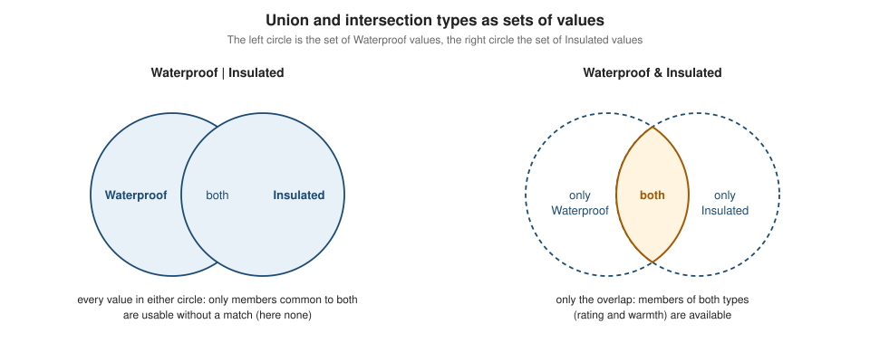

Union & Intersection Types
|
This content was generated with the assistance of AI and should be verified against the official documentation before being relied on in production. |
This page is written against Scala 3.10 (3.10.0, released 2026-10-12) and every example was compiled and run with Scala
3.10.0 through Scala CLI on JDK 26 (checked on 2026-10-15). Union and intersection types exist since Scala 3.0 and behave
the same on the 3.9 LTS line (3.9.0, 2026-09-03). The one change that matters for upgrades is the old compound-type
syntax A with B, which has warned since 3.4 and is an error in 3.10 (see A with B is gone).
Scala 3 types form a lattice, and unions and intersections are the two operators that build new types from old ones. A
union A | B is the set of values that belong to A or to B. An intersection A & B is the set of values that
belong to both. The examples use the trailhead scenario, a toolkit that plans hikes on a network of mountain trails, where
a place to sleep is a hut or a shelter and a piece of equipment can be both waterproof and insulated.

Union types
A union type is written with a vertical bar. The compiler accepts any value of either alternative where the union is expected, and a method that takes a union needs no overloads and no common supertype.
//> using scala 3.10.0
package trailhead
case class Hut(name: String)
case class Shelter(name: String, beds: Int)
def describe(place: Hut | Shelter): String = place match
case Hut(n) => s"hut $n"
case Shelter(n, b) => s"shelter $n with $b beds"
def parse(s: String): Int | String =
s.toIntOption.getOrElse(s"not a number: $s")
@main def run(): Unit =
println(describe(Hut("Refugio")))
println(describe(Shelter("Col", 6)))
println(parse("42"))
println(parse("x"))
summon[(Hut | Shelter) =:= (Shelter | Hut)]
summon[Hut <:< (Hut | Shelter)]
val dup: Int | Int = 3
println(dup)hut Refugio
shelter Col with 6 beds
42
not a number: x
3Source: Scala 3 Book: Union types
The three summon and Int | Int lines state the algebra of unions:
-
|is commutative,Hut | ShelterandShelter | Hutare the same type. -
Each alternative is a subtype of the union (
Hut <: Hut | Shelter), and the union is the least type with that property. -
A union of a type with itself is the type:
Int | Intis justInt.
Unions are not tagged. At run time the value of parse("42") is a plain Integer, and nothing records which side of the
union it came from. The only way to find out is to test the value, which is exactly what a match does.
Using a union: match, do not call
The members of a union are the members that are common to the join of its alternatives, and for unrelated classes that is
only what AnyRef has. Even when both alternatives declare a method of the same name and type, the compiler does not
look through the union:
//> using scala 3.10.0
package trailhead
trait Hut:
def name: String
def beds: Int
trait Shelter:
def name: String
def roof: Boolean
class Both(val name: String) extends Hut, Shelter:
def beds = 4
def roof = true
def nameOf(x: Hut | Shelter): String = x.name[error] ./a1.scala:14:40
[error] value name is not a member of trailhead.Hut | trailhead.Shelter
[error] def nameOf(x: Hut | Shelter): String = x.name
[error] ^^^^^^Source: Scala 3 Reference: Union Types
The fix is a type test, case h: Hut => h.name; case s: Shelter => s.name, or an intersection if the intention was
"both a hut and a shelter" (see Intersection types). When the alternatives are case class`es, `sealed types or
enum cases, a match on the union is checked for exhaustivity:
//> using scala 3.10.0
package trailhead
case class Hut(name: String)
case class Shelter(name: String)
def nameOf(x: Hut | Shelter): String = x match
case h: Hut => h.name
@main def run(): Unit = println(nameOf(Hut("A")))[warn] ./x1.scala:7:40
[warn] match may not be exhaustive.
[warn]
[warn] It would fail on pattern case: trailhead.Shelter(_)
[warn] def nameOf(x: Hut | Shelter): String = x match
[warn] ^Source: Scala 3 Book: Union types
The program still ran and printed A. See Pattern Matching for
type patterns and erasure, and Type Hierarchy & Matchable
for the supertypes that every union of ordinary values is a subtype of.
Inference and widening of unions
The compiler never invents a union unless that is the most precise answer it is allowed to give. The reference states the rule: a union type is assigned to an expression only if it is given explicitly, or if the common supertype of all alternatives is transparent. Otherwise the type is widened to the least common supertype that is not a union.
//> using scala 3.10.0
package trailhead
trait Place
case class Hut(name: String) extends Place
case class Shelter(name: String, beds: Int) extends Place
transparent trait Named
case class Peak(name: String) extends Named
case class Pass(name: String) extends Named
case class Lake(name: String)
case class Pond(name: String)
@main def run(): Unit =
val widened = if true then Hut("A") else Shelter("B", 2)
val explicit: Hut | Shelter = if true then Hut("A") else Shelter("B", 2)
val transp = if true then Peak("P") else Pass("Q")
val plain = if true then Lake("L") else Pond("M")
val mixedList = List(1, "two")
val e1: Int = widened
val e2: Int = explicit
val e3: Int = transp
val e4: Int = plain
val e5: Int = mixedList
var counter = if true then 1 else "x"
val e6: Int = counterThe program deliberately fails to compile so that the compiler reports the inferred type of each value. The six
Found: lines of the error, in order, are:
Found: (widened : trailhead.Place)
Found: (explicit : trailhead.Hut | trailhead.Shelter)
Found: (transp : trailhead.Peak | trailhead.Pass)
Found: (plain : trailhead.Lake | trailhead.Pond)
Found: (mixedList : List[Int | String])
Found: (counter : Int | String)Reading the table row by row:
-
widenedis aPlace, the common parent ofHutandShelter, because the traitPlaceis an ordinary one. The information that it must be a hut or a shelter is lost, and a latermatchon aPlaceis no longer exhaustive unlessPlaceissealed. -
explicitkeeps the union because the programmer wrote it. Annotating the type is the way to ask for the precise type. -
transpkeeps the union without an annotation becauseNamedis atransparent trait: it does not take part in the widening. The reference documentstransparentas the way to opt a supertrait out of the widening. -
plainalso keeps the union.LakeandPondhave no parent butObject, andObjectis among the classes the reference lists as assumed transparent. This is what makes the common case, a plaincase classpair, infer a union. -
mixedListandcountershow that primitives get a union too:IntandStringhave no common parent other thanAnyandMatchable, which the compiler treats likeObject, so the union is kept. Avargets the union as well.
Transparent traits and classes are described in Scala 3 Reference: Transparent Traits and Classes. Inference in general is covered in Type Inference.
Unions versus ADTs, Either and enums
A union is the cheapest way to say "one of these types" when the alternatives already exist, but it is a different tool from an algebraic data type, with different trade-offs:
| Question | Union A | B |
enum / sealed trait / Either[A, B] |
|---|---|---|
Is the choice tagged at run time? |
No. The value is an |
Yes. Each case is a class or an object, and |
Can the alternatives be the same type? |
They collapse: |
|
Must the alternatives be declared together? |
No. Any existing types, including library types, can be joined ad hoc. |
Cases of a |
Can you give the choice methods and a name? |
Not directly. A union has no members of its own. |
Yes. The ADT can carry methods, companions and a |
Is the result compositional ( |
No. A union has none of its own operations. |
|
Where is it the better fit? |
Parameters that accept several unrelated types, error values ( |
Domain modelling, where the cases are part of the model. See Algebraic Data Types & GADTs and Enums. |
Verified here with an enum and Either[Int, Int]:
//> using scala 3.10.0
package trailhead
@main def run(): Unit =
val e1: Either[Int, Int] = Left(3)
val e2: Either[Int, Int] = Right(3)
println(e1 == e2)
val u1: Int | Int = 3
println(u1)
val xs: List[Int | String] = List(1, "a", 2)
println(xs.collect { case i: Int => i })
val parsed: Int | Exception = "x".toIntOption.getOrElse(IllegalArgumentException("bad"))
println(parsed)false
3
List(1, 2)
java.lang.IllegalArgumentException: badThe collect call is how a mixed list is filtered back to one of its alternatives. The Scala 3 Book makes the same
comparison between the two ways of modelling alternatives in
Scala 3 Book: Describing alternatives.
For the Kotlin and Java counterparts of the ADT side see
Kotlin Sealed Classes and Enums and
Java Records and Sealed Classes.
Erasure and overloading
Because the JVM has no unions, a union in a method signature is erased to the least upper bound of its alternatives, and two methods whose unions erase to the same type clash:
//> using scala 3.10.0
package trailhead
object Log:
def write(x: Int | String): Unit = println("A")
def write(x: Int | Boolean): Unit = println("B")[error] ./i4.scala:6:7
[error] Conflicting definitions:
[error] def write(x: Int | String): Unit in object Log at line 5 and
[error] def write(x: Int | Boolean): Unit in object Log at line 6
[error] have the same type (x: Object): Unit after erasure.
[error]
[error] Consider adding a @targetName annotation to one of the conflicting definitions
[error] for disambiguation.
[error] def write(x: Int | Boolean): Unit = println("B")
[error] ^Adding @scala.annotation.targetName("writeFlag") to one overload fixes it (checked: Log.write("a") prints A and
Log.write(true) prints B), see Scala 3 Reference: The @targetName annotation.
Unions and null
With the compiler option -Yexplicit-nulls the type Null is no longer a subtype of every reference type, and a value that
may be null is a union, String | Null. The compiler then refuses to use the union where a plain String is expected:
//> using scala 3.10.0
//> using option -Yexplicit-nulls
package trailhead
def lookup(key: String): String | Null = if key == "a" then "alpha" else null
@main def run(): Unit =
val v = lookup("b")
println(v)
val s: String = lookup("a")[error] ./x2.scala:10:19
[error] Found: String | Null
[error] Required: String
[error] val s: String = lookup("a")
[error] ^^^^^^^^^^^Explicit nulls is an experimental feature, see Scala 3 Reference: Explicit Nulls.
The null-safety story with Option is on Option & Null Safety.
Intersection types
A & B has every member of A and of B. A value has the type if it is an A and also a B. Typically this comes from
a class that mixes in two traits, and the intersection is how a method requires both capabilities without inventing a
named subtype.
//> using scala 3.10.0
package trailhead
trait Waterproof:
def rating: Int
trait Insulated:
def warmth: Int
class Parka(val rating: Int, val warmth: Int) extends Waterproof, Insulated
def pack(x: Waterproof & Insulated): String =
s"waterproof ${x.rating}, warmth ${x.warmth}"
def pack2(x: Insulated & Waterproof): String = pack(x)
@main def run(): Unit =
val p = Parka(3, 5)
println(pack(p))
println(pack2(p))
val w: Waterproof = p
w match
case both: (Waterproof & Insulated) => println("both")
case _ => println("only waterproof")
val only: Waterproof = new Waterproof { def rating = 1 }
only match
case both: (Waterproof & Insulated) => println("both")
case _ => println("only waterproof")waterproof 3, warmth 5
waterproof 3, warmth 5
both
only waterproofSource: Scala 3 Book: Intersection types
The properties shown, which the reference spells out:
-
&is commutative,Waterproof & InsulatedandInsulated & Waterproofare the same type, andpack2callspackwithout a conversion. -
The members of an intersection are all the members of both sides.
-
An intersection can be used as a bound:
def score[T <: Waterproof & Insulated](items: List[T]), the Scala version of Java’s<T extends A & B>. -
In a type pattern the intersection must be wrapped in parentheses,
case x: (A & B) =>. Without them the 3.10 parser stops at the&:'=>' expected, but identifier found. (The 3.9 parser reports the same.) The 3.10 release notes call this out as the form the migration rewrite adds for you.
When members have the same name
If both sides define a member with the same name, the member of the intersection has the intersection of the two types. The reference example uses two traits that each return their own list of children:
//> using scala 3.10.0
package trailhead
trait A:
def children: List[A]
trait B:
def children: List[B]
class C extends A, B:
def children: List[A & B] = Nil
@main def run(): Unit =
val x: A & B = C()
val ys: List[A & B] = x.children
println(ys.size)0The type of children in A & B is List[A] & List[B], which simplifies to List[A & B] because List is covariant (see
Variance). Nobody has to implement that type: it only describes what a
value must provide. A class that inherits both traits is the one that has to give a children method of the right type,
as C does.
Two unrelated types such as Int & String are legal, and have no values, but they are not reduced to Nothing:
[error] ./a2.scala:16:20
[error] Found: (impossible : Int & String)
[error] Required: Nothing(For this check the program contained val impossible: Int & String = ??? followed by val n: Nothing = impossible.)
Intersections versus mixins
A trait list (class Parka extends Waterproof, Insulated) builds a class with its own linearization, see
Traits & Mixins. An intersection type is just the type of such
a value and has no run-time identity of its own. Two practical consequences: you can write the requirement of a parameter
without declaring a combined trait, and the same value can satisfy many different intersections.
A with B is gone
Scala 2 wrote the compound type with the keyword with: def pack(x: Waterproof with Insulated). Scala 3 replaced it with
& and deprecated the old form in 3.4. The behaviour was checked on three lines with the same source:
//> using scala 3.10.0
package trailhead
trait Waterproof:
def rating: Int
trait Insulated:
def warmth: Int
def pack(x: Waterproof with Insulated): Int = x.rating[error] ./w1.scala:9:24
[error] with as a type operator has been deprecated; use & instead
[error] This construct can be rewritten automatically under -rewrite -source 3.4-migration.
[error] def pack(x: Waterproof with Insulated): Int = x.rating
[error] ^^^^| Scala version | Behaviour for Waterproof with Insulated in a type |
|---|---|
3.3.8 (LTS) |
Compiles with no warning. (The warning started in 3.4.) |
3.9.0 (LTS) |
Compiles with a deprecation warning, |
3.10.0 |
Compile error, with the same message. |
The 3.9.0 and 3.10.0 messages are identical. Only the severity changed. The fix is mechanical, and the compiler can apply it:
compile on 3.10 with -rewrite -source 3.4-migration and every A with B type becomes A & B (checked: the file above was
patched to def pack(x: Waterproof & Insulated): Int = x.rating). Scala CLI users pass
//> using options -rewrite -source:3.4-migration.
with is still valid as the separator between parents in a class declaration, class Parka extends Waterproof with Insulated,
which compiled on 3.10.0 without a message. Only its use as a type operator was removed. The comma form
class Parka extends Waterproof, Insulated is the modern spelling; see Traits & Mixins.
Comparison with other languages
-
Java has no union types for general values. The closest forms are the multi-catch
catch (A | B e), where the exception variable has the join type, and the intersection bounds<T extends A & B>. Scala generalizes both: the&and the|work anywhere a type is expected. -
Kotlin has neither unions nor intersections as written types, and models alternatives with
sealedclasses andAny; see Kotlin Sealed Classes and Enums. -
TypeScript has both
A | BandA & B. Its unions are also untagged, and narrowing replacesmatch. -
Scala 2 has only the compound type
A with B, with no union type;Eitherand sealed traits carried that load.
Where the books are outdated
-
Material written for Scala 2 uses
A with Bfor compound types. It does not compile on 3.10, see A with B is gone. -
Examples that use
Eitherwhere an untagged union would do predate Scala 3 or deliberately model the tag; the choice is discussed in Unions versus ADTs, Either and enums.
Scala 3.9 LTS versus 3.10
-
A with Bas a type operator warns on 3.9 LTS and is an error on 3.10. Everything else on this page behaves the same on 3.9.0 and 3.10.0 for the compile-and-run examples that were repeated on both. -
The intersection pattern syntax
case x: (A & B)with parentheses is required on both lines. -
The 3.3 LTS line accepts
A with Bsilently, so code that must compile on 3.3 and 3.10 should write&, which both accept.